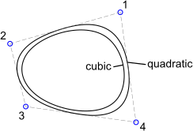

Spline (Kontrollpunkte)
Werkzeugleiste / Symbol:


Menü: Zeichnen > Spline > Spline (Kontrollpunkte)
Tastenkürzel: S, P
Kommandos: spline | sp
Beschreibung:
Mit diesem Werkzeug können Sie Spline Kurven konstruieren. Die unterstützte
Kurvenart nennt sich korrekt Non-uniform rational B-Splines (NURBS) mit
homogenen Gewichtungsfaktoren.
Vorgehensweise:
- Wählen Sie den Grad der Spline in der Optionenwerkzeugleiste.
Unterstützt werden Kurven des Grades 2 (quadratisch) und 3 (kubisch). Je
höher der Grad, desto 'glatter' oder 'stufenloser' die Kurve.
Beachten Sie, dass quadratische Spline Kurven mindestens drei und
kubische mindestens vier Kontrollpunkte benötigen.
- Aktivieren Sie die 'Geschlossen' Option in der Optionenwerkzeugleiste
wenn Sie eine geschlossene Kurve erstellen wollen. Geschlossene Splines
sind auch an den Endpunkten kontinuierlich (d.h. periodisch).
- Bestimmen Sie die Kontrollpunkte. Nach dem dritten (für quadratische
Kurven) beziehungsweise dem vierten (für kubische Kurven) Kontrollpunkt
wird eine Vorschau der Kurve angezeigt. Wenn Sie den jeweils zuletzt
gesetzten Kontrollpunkt wieder entfernen möchten, klicken Sie die
'Rückgängig' Schaltfläche in der Optionenwerkzeugleiste.
- Drücken Sie die Escape Taste oder klicken Sie die rechte Maustaste
nachdem der letzte Punkt definiert wurde.
- Sie können nun eine andere Spline zeichnen oder nochmals die rechte
Maustaste klicken um das Werkzeug zu terminieren.
Beispiel für zwei offene Splines mit vier Kontrollpunkten (quadratisch und
kubisch):

Beispiel für zwei geschlossene Splines mit vier Kontrollpunkten
(quadratisch und kubisch):
